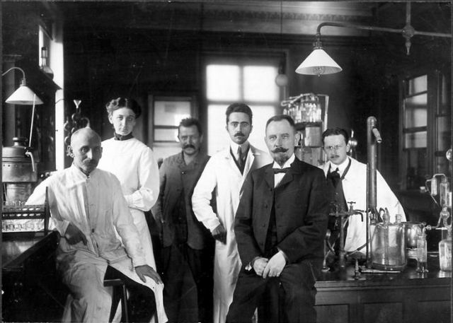
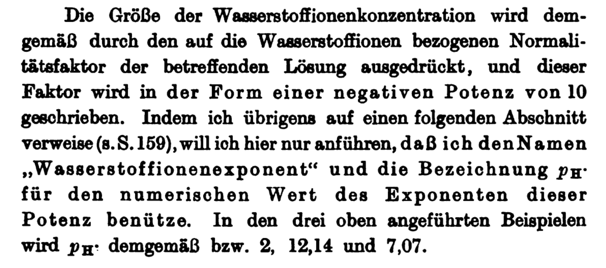

The WQ ToolBox software can be used without this manual to manage aquatic production (aquaculture, aquaponics, hydroponics) and
recreational (pool, spa, home aquarium) systems.
This three-part interactive intro to pH is a chapter in the WQ ToolBox manual.
The intent is to strengthen understanding of basic water quality concepts and vocabulary to bridge the gap between simple
explanations and the tech literature. This will equip users to become more effective and confident WQ managers.
This document was developed withIdyll, a “toolkit for creating data-driven stories
and explorable explanations”. Custom components were built withReactandD3.
The pH scale has no fixed limits: it runs from negative numbers [1] to more than 14. The lower the pH, the higher the acidity.
Some examples...
Solutions with high pH are “basic” or “alkaline”.
This use of “alkaline” has nothing to do with the concept of alkalinity (explained in that section) or with Al Kaline.
acid mine water from Iron Mountain (CA) has a pH of -3.6 [2]
concentrated hydrochloric acid (HCl) has a pH of about -1
sulfuric acid (H2SO4) in a car battery has a pH of about 0.8
the pH of healthy human blood is between 7.35 and 7.45
typical hand soap has a pH of about 10 (some have additives to lower pH)
saturated sodium hydroxide (NaOH) has a pH of 15
In aquatic production systems (aquaculture, aquaponics, hydroponics) and aquatic recreational systems (swimming pools, spas, home aquaria)
pH generally falls within the range of roughly 6.5 to 8.5.
There are exceptions. Some essential minerals (e.g., Iron, Manganese, Zinc) are only available to hydroponic plants at a pH of about 5.3
to 6.3. On the other end, pH above 9 is not uncommon in mature high-density cultures of microalgae raised as aquaculture larval feed.
pH is so important that it was crowned a ”master variable″ in one of the more authoritative texts on aquatic chemistry [3].
In its role as water quality’s “master variable”, pH controls the rate and direction of important processes that determine the health of aquatic systems.
Among others, pH plays a critical role in determining...
the concentration of toxic un-ionized ammonia (UIA)
the efficiency of nitrifying bacteria in removing ammonia
the amount of toxic dissolved carbon dioxide (CO2)
the calcite saturation state Ω (omega), important in skeletal formation
the effectiveness of chlorine in killing pathogens in pools & spas
the availability of minerals for good growth of hydroponic plants
The pH symbol was introduced in 1909 by the Danish chemist Søren Peder Lauritz Sørensen as part of his research on beer at the Carlsberg brewery in
Copenhagen [4].

Søren Sørensen & his crew at the Carlsberg lab
File under: Interesting factoid
If you’ve read other explanations of pH, you might have come across the statement that “p” stands for pondus or potens, Latin words which may be
translated as “power”, thus making pH “the power of hydrogen”. This interpretation is widely repeated.
Myers [5] looked into it and concluded that there is no evidence to suggest that Sørensen intended it to mean anything other than the letter “p”, perhaps
simply to distinguish one sample from another labeled “q”.
A few others (e.g., here)
have gone back to the source and point out the “money” sentence on p. 134 of Sørensen’s original paper [4] where he first introduces the term.

Starting with ”...und dieser Faktor....″ (end of line 3), a fair English translation is:
...and this factor will be written in the form of a negative power [Potenz, in German]of 10. By the way, I refer to this in a following section (see p. 159),
[and]here will I only mention that I use the name “hydrogen ion exponent” and the symbol pH for the numerical value of the exponent of this power
[again, Potenz].
Sørensen makes no reference to any separate meaning of “p”; but he clearly defines pH -- which he wrote as pH -- as a mathematical
power (i.e., an exponent).
The word die Potenz is used in German mathematics just like it is in English: i.e., raising a number to a power. So perhaps someone inferred that “p” stands for power and added a Latin flourish.
But that doesn’t appear to have been Sørensen’s intent in the passage above: He explicitly used the term Wasserstoffionenexponent, not Wasserstoffionenpotenz.)
Historically interesting? I think so. Any bearing at all on our water-quality work? Nope.
The life of “p”
Whatever it means -- if anything -- “p” has taken on a separate life of its own in chemical notation: it has been adopted as shorthand for the negative base-10 logarithm,
symbolized as ”-log10″.
As you’ll see a bit further along in this section of the WQ Map online manual, logarithms are a convenient way of transforming very small quantities into a more
human-friendly form. If you dip into the water-quality tech literature, you’re sure to come across not only pH, but also pOH, pKw, pKa,
and so forth.
Only very rarely will a single pH value satisfy the criteria of all important water quality properties. For example...
When pH is high, CO2 and Ω levels may be safe, but UIA may be a problem and hydroponic plants may be unable to absorb essential minerals.
But when pH is low enough for safe UIA, then CO2 may be dangerously high, Ω too low to form strong shells, and nitrifying bacteria may not have sufficient
bicarbonate (HCO3-) to function efficiently.
The following panel illustrates this aspect of pH management.
The game: adjust pH so that all water-quality properties fall within their safe range (i.e., each light is either green or yellow). Your targets:
Carbon dioxide (CO2) should be less than10 mg/L
Un-Ionized Ammonia-Nitrogen (UIA-N) should be less than12.5 μg/L
Aragonite saturation (Ωar) should be 1.0or higher
Start with a low pH, observe the effects, and then set a high pH to see the change.
Play with pH to find an optimum. How wide (or narrow) is that optimal pH range?
After you’ve found an optimum pH, change Total Ammonia-Nitrogen (TA-N) to see how that upsets the balance (it increases UIA-N); then search for a new optimum pH.
[Simplifications: temperature (25° C or 77° F), salinity (30‰), alkalinity (2.5 meq/kg or ~125 ppm), &
calcium (412 ppm) all are constant. No biogeochem processes are acting to throw you a curveball.]
pH 7.10 (NBS Scale)
TA-N 0.50 (mg/L)
The Take-away: If there is a pH optimum -- under some conditions, there isn’t -- it’s not always easy to find and maintain in a real-world setting.
(And the optimal range may be very narrow, spanning only a few tenths of a pH unit.)
Trial-and-error, as in this demo, is an inefficient management approach: you smack down one problem...and another problem pops up somewhere else -- kind of like
playing “Water Quality Whack-a-Mole”.
You don’t have to dive deeper into the details of pH presented below to manage your aquatic system: You can use the WQ Map -- included in the WQ ToolBox software -- to guide you to the Green Zone, the region where critical water-quality parameters are safely balanced.
But developing a deeper understanding of pH and other water-quality properties has advantages: It lays a foundation that will help you...
...better grasp the software results
...scrape more information & insight from the technical literature
...communicate more effectively with colleagues
...ask better questions of tech specialists (and understand the answers!)
...and enhance your sense of professional confidence
In short, it’s part of becoming a more complete WQ manager.
But if the material in the next section is more detailed than you want, or if you glaze over at the sight of equations, you can blow it off and
move on to one of the other topics. And if you get the urge later, you always can return and take it in a bit at a time.